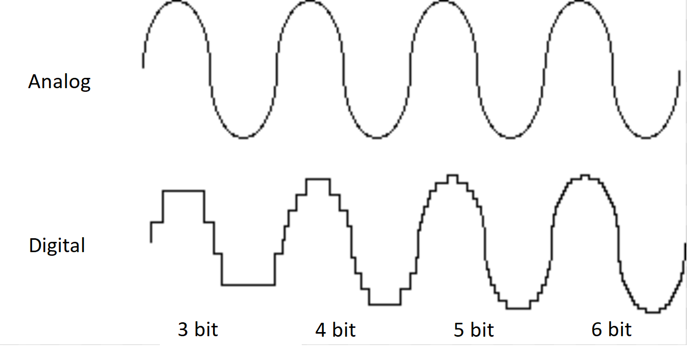

Opptak av lyd
Opptak av lyd har vore mogleg sidan slutten av 1800-talet. Ved hjelp av datamaskiner kan me gjere om mekaniske og elektroniske opptak til digitale opptak. Når eit lydopptak blir digitalisert, blir det gjort om til tall.
Digitalisering av lyd
Når me gjer om eit analogt lydopptak til eit eit digitalt lydopptak, er det spenninga som blir målt. Jo fleire gonger spenninga blir målt i sekundet, jo betre blir lydkvaliteten.
Komprimering av lyd
Komprimering av lyd blir gjort litt på same måte som komprimering av bilete - Me finn ein måte å redusere kor mange tal som må lagrast.
Komprimering for lys kallast pulskodemodulasjon (PCM - pulse code manipulation)
Hørsel og lydkvalitet
Menneskeleg tale foregår mellom frekvensområdet 2kHz og 5kHz. Det er også i dette frekvensområdet mennesker er best til å skille lyder mellom.